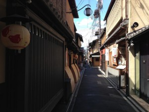
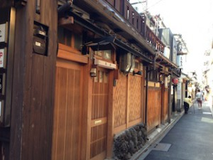
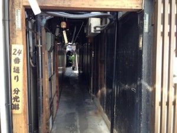
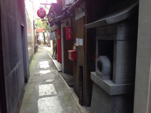
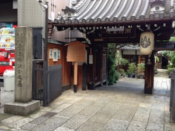
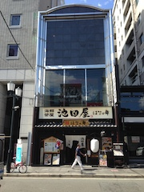
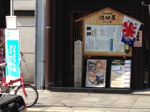
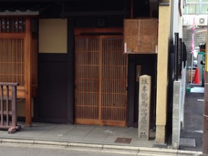
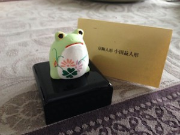

Ponto-cho （先斗町）is a Hanamchi district located between the Kamo-gawa River and Kiyamachi-dori Street. Hanamchi is a Japanese Geisha district. Many traditional tea houses and restaurants stand along the street. “町 (cho or machi)” in its name means a city, but it is not a city. It is actually just a street or a block area.
This area was originally a sandbank in the Kamo-gawa River, but reclamation work was started for the protection of the bank during the early Edo period, and it came to be called Shin-kawaramachi-dori Street.


Since this street runs along the Kamo-gawa River, some of the restaurants here have a nice panoramic view of the river. They have a special balcony overlooking a river, and it is called “Kawa-yuka” (川床). Many visitors enjoy their lunch or dinner feeling the cool air from the river. The summer in Kyoto is extremely hot, so it is said to be a special feature of summer in Japan.
The origin of the name:
The name, Ponto (先斗）, doesn’t sound like a Japanese word. According to one account, the origin of the name, Ponto, is found in the Portuguese language. Ponto may come from the Portuguese word “ponto” (point). But not for sure.
Another interesting theory was introduced in the Sankei newspaper. According to the article, the name comes from a Japanese card gambling term, sakibakari (先斗 in Kanji). Sakibakari means you bet all your money only for the first game.
There are several hypotheses like this, but we don’t know exactly where this name came from…
What to see:
Thinking about the origin of the name, Ponto, you should enjoy its history and imagine how the life here was before… The Hanamachi area is crammed with multinational restaurants and bars as well as high-class Japanese-style restaurants. Therefore, during lunch time and dinner time, this narrow street is flooded with people. To avoid the crowd, I visited there a little later after the peak time. I saw almost no one walking in the street, and I could enjoy my time quietly.
My purpose of visiting Ponto-cho this time was not for eating.
My plan was to find a small shrine hidden somewhere in a small alley.
Usu Daimyoujin God:
There are 32 small alleys linking Ponto-cho and Kiya-mchi dori Street, which run in parallel between Shijo-dori and Sanjo-dori Street. They are so small that they don’t look like alleys.


But there is a surprise! Take the number 5 alley, and you will find a small “hokora”(small shrine) standing quietly in the kind of dark place.

If you don’t know its history, you will most likely pass by without caring.

Usu Daimyojin God lives here.
According to Kyoto folklore, there was once a racoon dog living in Konyaseki, Ôtsu, but Konyaseki came to be reclaimed. The racoon dog, which had lost its habitat, started to live in a “usu” (stone mill). The usu belonged to three persons, and they had an oracle. They asked a Shinto priest to purify the usu and constructed the small shrine. This is the origin of this small shrine according to the folklore tale.
I also found another interesting theory about this mysterious shrine. This was suggested by a professor from Kyoto University.
In the 16th century, a roman catholic church in this area disappeared because of crackdowns on Christianity. After that, however, the believers might have continued to pray using the “usu” as Deus (Christian God). The two words sound similar.
It is very exciting to imagine what was really happening in the past at this site… I love history.
Zuisen-ji Temple: (on Sanjo-dori Street found on the north of Ponto -cho)
Another place I visited has a very sad story.
This temple was constructed to appease the sprits of Toyotomi Hidetsugu and his family. Hidetsugu was adopted by his uncle, Toyotomi Hideyosi, who had no young male successor at that time. However, after a while, Hideyori was born to Hideyoshi, and Thidetsugu became a great obstacle for Hideyoshi. In 1595 he was forced to commit hara-kiri under suspicion for treason, and all his family were also killed. Their grave mound was treated badly and forgotten for many years. The flood at the Kamogawa-river also devastated the grave terribly. It was when the reign of the Tokugawa Shogunate started that this grave mound was rediscovered. Suminokura Ryoi, who played a major role in constructing canals and making the rivers of Kyoto more navigable, found the mound and felt very sorry for Hidetsugu and his family, and he constructed this temple.
I wanted to visit this temple to appease their spirits too. Life must have been much harder at that time than we can imagine today.

Ikedaya-Sodo (The Ikedaya Incident): (on Sanjo-dori Street)
The Ikedaya Incident was an armed encounter between masterless samurai formally employed by the Choshu and Tosa clans, and the Shinsengumi, the special police of the Shogun Government, in 1864 at the Ikedaya Inn in Kyoto. At that time, the Choshu and Tosa were planning to overthrow the Shogunate, and the samurai from the Mito and the Satsuma clans, were supporting the Shogun. Japan was divided into two.


Today, an Izakaya bar stands at the former site of the Ikedaya Inn. Do you see the commemorative plague in the photo?


This is a lumber dealer’s house, called “Suya,” where Sakamoto Ryoma was once living. He was a very important figure in the movement to overthrow the Tokugawa Shogunate. He negotiated for peace with Choshu and Satsuma, two powerful provinces that had long been hostile to each other. Thanks to his work, Japan could find a new way to modernization.
Last, I introduce an Odamasu doll. It is a traditional crafts product in Kyoto. By chance I found a shop near the Ikedaya Inn on Snajo-dori Street. They are sooooo cute. Find one you like. I think it will be a good gift!
